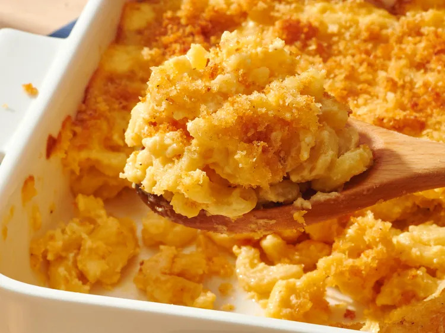

Homemade Mac and Cheese

Description
This homemade mac and cheese is topped with buttered bread crumbs for pure comfort
food. It's easy to make the cheese sauce from scratch, starting with a roux and adding
milk, Cheddar, and Parmesan to make a rich, decadent sauce that coats every nook and
cranny of the macaroni noodles.
Ingredients
- 8 ounces uncooked elbow macaroni
- ¼ cup salted butter
- 3 tablespoons all-purpose flour
- 3 cups milk, divided, or as needed
- 2 cups shredded sharp Cheddar cheese
- ½ cup finely grated Parmesan cheese
- salt and ground black pepper to taste
- 2 tablespoons salted butter
- ½ cup dry bread crumbs
- 1 pinch ground paprika
Steps
-
Preheat the oven to 350 degrees F (175 degrees C). Grease an 8-inch square
baking dish.
-
Bring a large pot of lightly salted water to a boil. Add macaroni and cook, stirring
occasionally, until tender yet firm to the bite, about 8 minutes. Drain and
transfer to the prepared baking dish.
-
Meanwhile, melt butter in a medium skillet over low heat. Whisk in flour until
the mixture becomes paste-like and light golden brown, 3 to 5 minutes.
- Gradually whisk in 2½ cups milk; bring to simmer.
-
Stir in Cheddar and Parmesan cheese; season with salt and black pepper. Cook
and stir over low heat until cheeses are melted and sauce has thickened, 3 to 5
minutes, adding up to the remaining 1/2 cup milk if needed.
- Pour cheese sauce over macaroni; stir until well combined.
-
Melt 2 tablespoons butter in a skillet over medium heat. Add bread crumbs;
cook and stir until well coated and browned.
- Spread bread crumbs over macaroni and cheese; sprinkle with paprika.
-
Bake in the preheated oven until topping is golden brown and macaroni and
cheese is gooey and bubbling, about 30 minutes.
Home